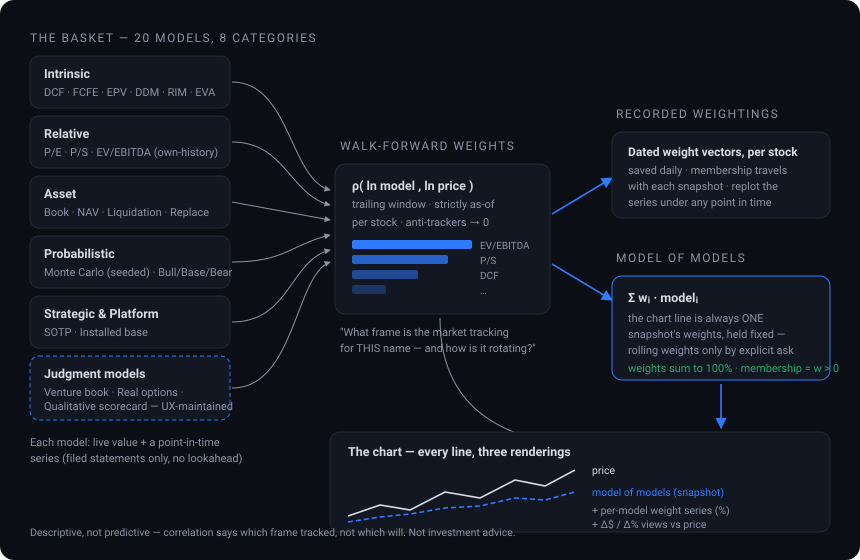

Open Trading SurfaceOpen Trading Surface
Open Trading SurfaceOpen Trading SurfaceHow Open Trading Surface works, how to set it up, and how to use every part of it. If you're new, start with the 5-minute quickstart, then dip into whichever feature you need. If you last used it before the panel workspace arrived, read The terminal is a workspace first — the way you move around has changed.
"Analyze NVDA — chart it with the 50/200-day averages and RSI,
then give me the fundamental picture and what the bulls and bears would say."/ots:automate and pick the scheduled jobs you want (see Automations).Two ideas explain everything, and a third explains its character.
The market is a price discovery mechanism, not a forecast — so Open Trading Surface doesn't try to out-predict it. It maintains a digital twin that discovers an evidence-supported price per name, reconciles it against the market's price, and treats the unexplained gap — the residual — as the object of study: mapped market-wide on the heat map, logged in the divergence ledger, and tested for reratings. Around that core runs the connected chain: a worldview (macro, geopolitics, demographics) becomes theses with explicit, auditable probability estimates and an evidence ledger; theses compile into screens, cohorts and paper portfolios; individual names are grounded in driver-based operating models, an articulated pro forma statement set, and a mixture of valuation frames. It persists between sessions and is continuously reassessed as evidence arrives. Everything you build compounds instead of resetting.
The terminal is a shared world-model: everything you see, the agent can read and drive. You work by conversation — "open a chart on AAPL beside MSFT," "what do the signals say," "record this as a thesis." The agent inspects the exact panel you're looking at and acts on it. It's plan-only: it models, screens, and drafts, but never places a trade or moves money.
This is the property that distinguishes it, and it is deliberate. Where a number cannot be honestly computed, Open Trading Surface says so by name instead of substituting a plausible one — which input is missing, on which leg, and what would fix it. Where a new layer would move a number you have already read, it discloses before it adjusts: both values side by side, the delta named, and the change recorded as a dated methodology break. And it will tell you what it could honestly backtest rather than producing a flattering number over a window it does not have the record for. Empty results, red process lights and refusal sentences are not failures of the product — they are the product working.
Open Trading Surface is a plugin. Install it from the Customize menu:
ots.plugin.ots.plugin file you downloaded. Plugins you add yourself are stored locally on your computer./ menu, and its tools as mcp__ots__*.The easiest path is in the UI: open the terminal, click 🛠 Administration in the top strip, and pick Settings from the left menu. That one panel holds every credential the system uses:
Your Name your@email.com. EDGAR rejects anonymous requests.You can also set FMP_API_KEY / FRED_API_KEY / OTS_AI_API_KEY environment variables, which take precedence over the stored file.
~/.ots/config.json with file mode 600 and are never transmitted anywhere but the data providers themselves. Exactly one AI vendor is configured at a time — saving a different one replaces the configuration rather than parking the old key beside it. There is no simultaneous-vendor mode and no automatic failover, deliberately.The Settings panel also holds the Perspectives prompt editor.
On first launch the terminal presents a one-time legal acknowledgment. You must read and accept it before using the application. A short disclaimer stays visible in the footer at all times, and the full terms live on the Legal page.
The twin accrues by running batches. The plugin ships the capabilities, but scheduled tasks live on your machine, so installing the plugin does not install them. Run /ots:automate and the agent walks the registry with you: for each automation it shows the title, what it does, the suggested cadence, and a heads-up for the heavy ones, then creates only the tasks you choose.
Whatever you install, Administration → Processes is where you see whether it actually ran. If your environment has no scheduling capability, /ots:automate gives you the command-line equivalent for the automations that have one, and says plainly which have no headless equivalent.
The right-hand area of the terminal is no longer one active view — it is an MDI floating panel workspace. You can open any number of panels, arrange them freely, and reduce them without closing them.

A panel is opened against a security and a lens, and neither changes for its life. "AAPL · Chart" stays AAPL forever. Changing the lens means opening another panel; changing the security means opening another panel. There is no gesture and no agent call that retargets a live panel at a different name.
That single decision is what makes cross-security comparison possible everywhere — three Model of Models panels on three names, read against each other, on one screen.

The one exception: a panel whose security no longer resolves shows a refusal and offers a picker so you can deliberately retarget a panel that is showing nothing.
| Part of the screen | What it does |
|---|---|
| The top strip | A launcher, not a mode switch. Each entry is a security context. Clicking one chooses which security the left menu will open next — it does not hide, show, close or open any panel. The strip is the union of contexts you added and the securities of every open panel. Alongside them sit the pinned tabs: 🔔 Alerts, 📁 Portfolios, 🧬 Cohorts, 🌐 Market, 🛍 Marketplace, 🌎 Macro-economic and 🛠 Administration. |
| The left menu (rail) | Opens panels. Clicking a rail item opens a new floating panel on the current context. It marks exactly one item as focused — the view the focused panel is showing — and puts a quiet count beside any view that has open panels for this security. |
| The workspace bar | Sits directly above the panel area (not across the rail) and wraps rather than scrolling. Carries ⊞ Tile · ⊟ Cascade · ▤ Stack · ⊙ Gather · ▬ All · ▣ Restore all, the panel and reduced counts, and any workspace notices. |
| The taskbar | Along the bottom of the workspace: every open panel, in open order, not just the minimized ones. Click to summon; middle-click or the hover ✕ to close; right-click for the panel menu. |
| A panel's title bar | The drag handle, carrying ⧉ duplicate, ▬ minimize, ▣ maximize (❐ when it is maximized) and ✕ close, plus a ⋯ menu with duplicate, close others, bring to front and send to back. Double-click maximizes and restores. |
unmaximize_panel if you want to be certain of the end state; maximize_panel is a toggle and cannot promise one.Two chart panels on the same name are ordinary, so chart state diverges fully per panel — including drawings. It is made safe by inherit-then-diverge: a new chart panel with no record of its own reads the existing symbol-scoped record and immediately writes a copy to its own key, so your existing drawings land on the first panel you open and on every later one, nothing is orphaned, and the original record is never deleted or written to by a panel. A standalone chart (a published chart URL) goes on reading exactly what it always read. A drawing that cannot be migrated is refused by name, never silently dropped.
Administration, Portfolios, Alerts, Cohorts, Market, Marketplace and Macro-economic are full-pane covers, not panels. While one covers the workspace the taskbar stays visible and dimmed, and clicking an entry returns you to the workspace with that panel focused. The workspace is occluded, not destroyed: geometry, z-order, scroll positions and loaded data all survive and nothing is re-fetched.
Stated plainly so you don't go looking: there are no named saved layouts on the server (what exists is export/import of the whole arrangement in one round trip, plus one-slot "restore previous arrangement" and "reopen closed panel" undos); no keyboard shortcut set beyond arrow-key nudging of a focused title bar; no screen-reader pass; no docking, snapping or tabbed panel groups; no tear-off OS windows; no cross-panel crosshair (the ⌖ Link control links the cells of one grid only); and no per-window workspaces — two browser tabs share one saved workspace and the last to save wins, which is disclosed on the workspace bar rather than prevented.
You can navigate the terminal yourself, but the fastest way is to ask. The agent can read what's on screen and drive it.
| You say | What happens |
|---|---|
| "Open a chart on AAPL and one on MSFT, side by side." | Opens two chart panels and tiles them. |
| "Put the Model of Models for AAPL, MSFT and NVDA on screen at once." | Three bound panels, arranged. |
| "I've lost the statements panel." | summon_panel — restore, raise and bring into view, guaranteed. |
| "Tidy this up." / "Minimize everything but the chart." | Gather / tile / minimize-all through the workspace verbs. |
| "What's open right now?" | Reads the workspace state: every panel, its security, its view, its geometry, and whether it is on screen. |
active_symbol now means the security of the focused panel (what you are actually looking at), falling back to the strip's selection when nothing is focused. The strip's selection — the security the left menu will open next — is context_symbol. Both are always present, they may legitimately differ, and every payload carries active_symbol_means saying which of the two it currently is. Older verbs (set_view, select_security, add_tab, remove_tab…) still answer, each marking itself deprecated, stating what it actually did, and naming its successor.The utility and engine surfaces live under one pinned tab — 🛠 Administration — behind a left-hand menu, grouped so the list reads rather than merely scanning. There are eleven panels in four groups:
| Group | Panels |
|---|---|
| Machine | Settings (all API keys and the Perspectives prompt editor) · Processes (the batches on this machine) · Support (guide, diagnostics, what's new and learning, served from the same knowledge base the agent uses) |
| Event processing — what can be known | Reach · Conditions |
| Event processing — what is watched | Rules · Strategies |
| Event processing — what happened | Events · Firings · Runs · Backtests |
The ordering is the reading order: what could be known, what can be asked, what is being watched, what is being held because of it — then what actually happened, what a rule has actually done, what a strategy did today, and what a replay of the past concluded.
Administration → Processes is the board for every batch this installation runs. Each row carries a status light with the reason for it, the cadence, when it last ran, when it is next due, and Start / Pause controls.

The registry is derived from the code rather than hand-maintained. It currently declares the surface batch, the screener enrichment batch, the daily repricing scan, the cohort refresh, the daily ledger, the monthly universe snapshot (the survivorship archive), the event-engine tick, the strategy loop, the monthly point-in-time snapshot, and the legacy alert evaluation.
Pausing is authoritative and journaled: a paused process reads red as "halted by owner" until you Resume. A red light is information, not a trigger — nothing on this board edits books, models or configuration.
Two small things do most of the work of making the interface coherent.
Every dialog in the system that asks you to choose something — a screen field, a cohort predicate, a chart indicator, a lens, a security, a transaction type, a rule's rank field — opens the same component. Same geometry, same search box, same keyboard (Esc closes, Enter commits, ↑/↓ walk the rows), same "no matches anywhere" sentence. Where a dialog deliberately behaves differently — single-select and Apply, versus a multi-stage basket and OK — the footer says which gesture it is using, so you are never guessing.
Everything selectable sits in one category taxonomy: fundamental · technical · model & attribution · macro & data · market & flows · identity & classification. Membership is derived from the underlying registries — screen fields, chart indicators, the series catalog, the pricing-model registry, model factors — rather than authored, so a field that becomes available becomes selectable, and an orphaned category fails the build.
The rule: if hiding it could cause a number on screen to be read wrongly, it stays on the row. If it only explains or attributes, it moves behind one icon.
Nothing is truncated behind the icon: the full text renders with no line clamp, and the popup is keyboard-dismissible with focus returned to the icon that opened it.
The charting workbench is a full technical-analysis surface with its own engine — ~125 indicators, 39 drawing tools, all timeframes and extended hours, compare overlays, and event markers. Open one with a request, then refine it in words. Inside the terminal it is a panel; you can also open a standalone chart page.

| You say | What happens |
|---|---|
| "Chart AAPL daily with the 50 and 200-day moving averages, RSI, and MACD." | Opens a chart panel with those overlays and oscillators. |
| "Add an anchored VWAP from the last earnings date and mark the gap." | The agent adds the drawing/overlay to the panel you're looking at. |
| "Switch to weekly, log scale, and compare against MSFT and the SP500." | Reconfigures timeframe/scale and adds normalized compare lines. |
| "What do the signals say?" | Reads the live 12-signal technical battery + key levels off the chart. |

Pan or zoom one cell and the others follow. The crosshair relay resolves to its owning panel, so it never leaks into a different grid. Ask for "a 4-up grid of AAPL, MSFT, JNJ and KO" and re-asking focuses the grid you already have; Alt-click the menu item (or ask for a duplicate) to get a second one.
The chart isn't limited to price. The Indicators dialog overlays any external time series — economic (FRED), commodity/energy prices, per-company financial-statement line items, or SEC EDGAR XBRL facts — directly on the chart so you can compare and test predictive relationships. Each overlay renders either on its own stacked right-hand axis (so different units line up honestly) or in a separate pane, your choice per series, and can be shifted forward or back in bars to line a leading indicator up against price. Ask the agent to "find the best lead/lag" and it runs a cross-correlation (analyze_lead_lag) to tell you which lag aligns them best and how strongly.
| You say | What it does |
|---|---|
| "Overlay the 10-year Treasury yield and WTI crude on this chart." | Adds each as its own right-hand axis (refs like fred:DGS10, commodity:CLUSD). |
| "Does copper lead this stock? Shift it to the best lag." | Runs the lead/lag cross-correlation and applies the shift that best aligns them. |
| "Plot AAPL quarterly revenue and its EDGAR net income under the price." | Adds fmp:income:AAPL:revenue:quarter and edgar:AAPL:NetIncomeLoss as panes. |
A macro series on the chart is rarely expected to equal the price — the relationship is the object. Every overlay's row in the picker offers three renderings: value (as fetched), Δ$ (price − series), and Δ% ((price − series)/|series|). A model line flipped to Δ$ reads as the premium itself, through time.
Replay walks a chart forward bar by bar from any start date. The no-lookahead guarantee is structural, not a promise: the chart is windowed to the cursor, so indicators, the 12-signal battery, auto-detections and event markers all recompute from bars at or before the cursor and simply cannot see the future. Fundamentals get the honest treatment most tools skip — analyst targets and DCF lines are as-known-now, so during replay they are suppressed and labelled unless one of your point-in-time snapshots covers the cursor date, in which case the values you actually observed then are drawn and marked as-known-then.
Rule backtesting takes entry/exit rules in the series DSL (or describe them and the agent writes them) and returns the trade list, equity curve, hit rate, average win/loss, profit factor, exposure, max drawdown and a buy-and-hold comparison, with costs in basis points per side. Every rule backtest reserves the most recent ~25% of bars as a holdout and scores both windows — the split happens inside the engine, so nobody can request the flattering half alone.
close > 50) is a state that re-enters after each exit; use crossover/crossunder for edge-triggered entries. For portfolio-level testing, see the backtester.Beyond the built-in library you can define your own indicator from a formula and use it exactly like a built-in. Ask for it in words — "define an indicator called vol_ratio that is the 10-day average volume over the 50-day average volume" — and it appears in the indicator library under Custom, with the same add / edit-parameters / hide / remove controls as everything else. Definitions persist.
Formulas are written over the bar fields (open, high, low, close, volume) with windowed functions — sma, ema, wma, highest, lowest, stdev, sum, slope, ref, crossover, crossunder, barssince — plus any parameters you declare, which then become editable inputs on the chart.
eval-ed in your browser, and the chart sends bars it already holds, so a custom indicator costs no extra API calls. The same expressions drive rule backtesting, so an idea you can plot is an idea you can test.The 🔎 Detect menu runs pattern recognition locally on the bars already loaded — no extra API calls. Toggle Trendlines (fitted through pivots, scored by touches, recency and violations), S/R zones (volume-weighted pivot clusters), Candlestick patterns (~40 recognizers), and Geometric patterns (double tops/bottoms, head & shoulders, triangles, channels), with a minimum-confidence slider. Detections render as ordinary chart drawings but tagged auto — dashed and tinted by direction — so they never mix with your own drawings and can be cleared separately.
Crucially they are structured objects, not pixels: each carries chart coordinates, a confidence score, a direction, a status (forming / confirmed / invalidated) and a plain-language narrative, so the agent can read exactly what you are looking at and act on it.
The 📅 Events menu covers every source: earnings (beat/miss), dividends, splits, insider buys/sells, SEC filings, earnings-call transcripts, institutional 13F ownership flow, analyst rating changes, quarterly financial releases, news, and your own research notes. Each is a separate toggle, and every marker is sentiment-colored, with busy days collapsed into a single N× cluster. Turn on Show events pane for a lane charting net event sentiment per bar.
Hover any marker to read it; click it and the terminal opens the view that owns the source — filings to SEC Filings, ratings to Analyst Ratings, insider to Insider Trades — with the dated row highlighted. If the security has an operating model, every event also carries a model link naming which driver it bears on, drawn only through edges your model really has.
The screener does cross-sectional factor ranking (percentile or winsorized z-score, sector-neutral), an expression language for custom filters and derived fields, quality/health scores (Piotroski, Altman), 12-1 momentum, 13F crowding, and point-in-time-honest factor backtests — over a vocabulary of several hundred fields (roughly 250 in the catalog before the later expansions, plus the enrichment families, plus 148 technical readings).
| You say | What it does |
|---|---|
| "Screen large-cap tech under 20× earnings, ranked by momentum, sector-neutral." | Builds and runs the screen, returns a ranked table. |
| "Add a filter: free-cash-flow yield > 4% and Piotroski ≥ 7." | Uses the expression DSL to refine the universe. |
| "What fields can I screen on?" | list_screen_fields — the catalog, plus the register of what is deferred and what is not planned. |
| "Save this as 'Quality Compounders' and tell me who entered or left since last run." | Persists the screen and reports membership deltas over time. |
Graham's defensive criteria, retranslated instrument by instrument. The diagnosis behind it is not that the criteria are too strict but that the instruments now adversely select: a price-to-book gate in an intangible economy is close to a filter for asset-heavy, low-return, structurally declining businesses, because those are the only firms whose capital base still shows up on the balance sheet at something near economic size.
Ask the agent to list your screens and cohorts to find them; each shipped cohort points at its screen by name, so membership re-resolves from the rule rather than freezing a list.

The 🧬 Cohorts tab maintains the peer groups every valuation is measured against — sector, size, index, factor screens, and your own lists, with equal / cap / explicit weighting. A cohort detail view carries premium and coverage headers, a modeling-gaps read, and view on surface. A thesis can materialize its screen into a living cohort whose membership re-evaluates as fundamentals change.
A portfolio-linked cohort derives its membership at read time from the linked portfolio's open positions, so there is no stored list to fall out of sync — the resolution is the sync. These cohorts cannot be edited or deleted directly; the refusal names the derivation.
More than twenty valuation frames behind one interface — every methodology the industry uses, presented in the industry's own terms — plus a Model of Models that estimates the mixture of frames the market is actually pricing each name on. Two panels carry it: 💠 Pricing Models (every model side by side) and 📐 Model of Models (the precision-weighted blend, with the modeling-gaps strip).


| You say | What it does |
|---|---|
| "Compare every pricing model on AAPL." | Runs the whole basket — intrinsic (DCF, FCFE, EPV, DDM, residual income, EVA), relative multiples at the name's own trailing median, asset models, Monte Carlo, scenarios, SOTP — each with its fair value vs price; models that decline say why. |
| "What frame is the market pricing TSLA on?" | The Model of Models: each model earns a walk-forward correlation weight against the name's own price (strictly as-of, no lookahead). The weights are the reading — and their year-over-year drift shows the rotation. |
| "Chart the DCF and EV/EBITDA lines against price." | Every model has a point-in-time series (filed statements only) — add from the chart picker's Pricing engine section, or by ref: pricing:AAPL:intrinsic.dcf_fcff. |
| "Replot the composite under January's weighting." | Weight vectors are recorded per stock per date; pricing:SYM:composite.momw:2026-01-15 holds that day's recorded vector fixed across the whole series. |
| "Show the rotation itself." | Per-model weight series — pricing:SYM:weight.relative.pe and friends — chart each model's weight through time in percent. |
It is naive to treat every frame as an equal peer, and it is wrong to blend an add-on book as a peer of a whole-company frame when it is an increment. So each name carries a declared valuation structure, exactly one in force at a time, dated and attributed:
Classification is evidence-proposed and owner-overridable, and carries the condition under which it should be re-proposed. In the shipped default the structural composite is computed and disclosed beside the incumbent composite rather than replacing the published headline — disclosure precedes adjustment.
Some of what the market prices does not exist in filed statements — capital programs and pre-revenue ventures like robotaxi fleets, humanoid robots, AI infrastructure. The 🎯 Strategic Initiatives panel maintains full SI books: per-initiative dated cash-flow lattices with capital schedules and ramps, milestone gates with expected resolution dates, a risk register, an append-only event journal, immutable snapshots, maturation fade, and calibration scoring — plus a belief dial that inverts the market price into the implied success odds, recorded as a daily series. Editor views include the tornado, waterfall, and probability cone. Alongside the books, simpler judgment models take the inputs only an analyst can supply:
| Model | You maintain |
|---|---|
| Venture book | Per-venture TAM, achievable share, margin at scale, probability, years, committed capital. Valued as probability-weighted PV net of committed capex — a venture whose spend exceeds its prize shows a negative EV, as information. |
| Real options | Opportunity value S, investment cost K, horizon T, volatility σ (defaults to the name's own). |
| Platform economics | Users, ARPU, contribution margin, capitalization multiple. |
| Qualitative scorecard | Four 0–100 analyst scores; the engine computes the weighting and invents no score of its own. |
| SOTP tilts | Per-segment EV/Sales multiples over the disclosed segments. |
Saved inputs persist per symbol with an edit history and activate the model everywhere. Every stored number is labelled analyst judgment. The pairing that matters: chart the composite in Δ$ to measure the premium the market is granting for the unseen businesses — then write your own venture book and compare.
Give any company a driver-based operating model calibrated from its filings and consensus, then turn any event into an instant EPS and fair-value delta. An elasticity table shows exactly which drivers move the stock. The operating model is the machinery beneath the pricing engine's intrinsic models — its drivers feed the DCF, FCFE, EPV and Monte Carlo lines — and in the terminal its panels are superseded by the Model of Models view; the model itself remains fully operable through the agent.
| You say | What it does |
|---|---|
| "Build an operating model for CAT." | Calibrates revenue → EBIT → EPS → FCF, plus exit-multiple + DCF fair value. |
| "Shock gross margin down 2 points and raise the tax rate to 21%." | Re-runs the model and reports the EPS and fair-value impact. |
| "Which drivers matter most?" | Returns the elasticity table (sensitivity of fair value to each driver). |
A model isn't just its internal drivers. The influence map wires external economic, policy, supply-chain and consumer/customer factors to the internal drivers they move by a signed influence edge with a stated, auditable rationale. It renders left-to-right — factors → drivers → EPS & fair value — with green edges that raise a driver and red that lower it, thickness scaled to sensitivity. Shock a factor and Open Trading Surface propagates it through the edges into the drivers and reuses the valuation engine, returning the full factor → driver → outcome trace.
| You say | What it does |
|---|---|
| "Show CAT's influence map." | Opens the factor → driver → value diagram (seeds a sensible default factor set the first time). |
| "Raise tariffs 10 points on CAT — what happens to fair value?" | Propagates the tariff shock into gross margin and re-runs the model, with the trace. |
| "Calibrate CAT's factors from data." | Pulls each factor's current level from FRED and, on request, fits sensitivities by regression against the company's own history. |
Any external series can be a model dependency, and the model will tell you what actually carries the forecast. Run forecast & attribution projects every series-backed factor forward, propagates each through its weighted influence edges, and decomposes the multi-year fair-value / EPS forecast into per-factor contributions with computed weight shares (ranked bars, plus a reconciliation residual for interaction effects). Each factor carries a tunable weight (1 = as-calibrated) to amplify, damp, or mute a dependency without touching the calibration.
Segment-level drivers. Open Trading Surface assembles each company's disclosed segment revenue history, ties every period to consolidated revenue (a residual becomes an explicit unallocated segment; an overshoot is flagged suspect, never scaled away), and detects re-segmentations as structural breaks. Drivers may then be scoped — revenue_growth_pct@cloud — and the projection blends growth by the segment mix, with mix shift as an output you can chart.
Quarterly frequency. Annual fits cap near 15 points; quarterly gives ~60, which honestly earns the A evidence grade that annual data structurally cannot. Seasonality is treated as structure, never signal: all quarterly fits use year-over-year same-quarter changes. Each dated model snapshot becomes a next-quarter EPS checkpoint scored against the print within weeks.
Three-statement articulation. Setting a payout ratio, a buyback share of FCF or a target leverage switches a model into articulated mode: earnings roll into equity, capex − D&A into fixed assets, FCF less dividends and buybacks into cash, and interest is recomputed from average net debt. Buybacks retire real dollars. The tie — assets = liabilities + equity — is enforced in every projected year: a model that cannot tie refuses to run and names the gap.

Beneath the valuation frames sits a driver-based three-statement pro forma: normalized historicals on the left, forecast periods to the right, statements that articulate, and valuation computed off the projection. Its layers, in order:
The assembled object is the substrate: a grid of quarter labels (filed and projected on one calendar), the statements themselves, a stamp of the layers that produced them (economy state, industry chain, driver fits, initiative book generation, financing policy), and an as-of date. It is point-in-time by construction: a substrate struck at a past date contains only filings whose filing date precedes it, and where the economy container has no snapshot at that date the current one is used and stamped as anachronistic rather than silently substituted.
get_substrate), and it is what the direction of the system is toward: models as independent lenses over one statement set — each free to disagree about what the statements are worth, none free to disagree about what they say. That migration is staged, and in the shipped default the precision-weighted composite still carries the headline. As with every layer here, the change will arrive as a disclosed, dated methodology break rather than a silent one.Simulation is the intended run mode: one draw from the joint driver distribution produces one articulated statement path that all readouts then read, with gates becoming Bernoulli draws rather than probability multipliers. Quarterly periodicity out to 24 quarters, a duration set, versioned pro forma snapshots and event-to-line revision are specified and not yet built.
Under 🌎 Macro-economic sit three panels: Thesis, Economy and Sectors — a belief about the world, the economy that prices it, and the industries that carry it.
It does not forecast, does not opine, and computes nothing a valuation could not compute for itself given the values. Its job is that there is one place the values live. The admission test for a variable is narrow: does it change a number in a valuation? — the real growth rate, inflation, the policy rate, the ten-year risk-free, the BBB credit spread, the equity risk premium, potential growth, the effective tax rate.
Variables are series on the pro forma's own period grid, not a row of current values, so inheritance downstream is a lookup rather than an interpolation, and a grid mismatch is a refusal rather than a coercion. Scenarios are a complete alternate filling of the container with probabilities that must sum to one — a scenario is not a stress test.
Sectors is the same shape one rung down. Classification is the provider's, and the legal key sets are derived from the provider rather than curated, because a curated list rots. Resolution runs coarse to fine, the finer winning — sector container, then industry container, then company override — with the whole chain disclosed. Variables are industry-native quantities that do not exist at the economy level: industry revenue growth, operating margin, capex intensity, beta, credit spread.
The governing rule: a fitted driver is a measurement; an industry variable is a prior; a measurement is never silently displaced by a prior — not with every toggle on. The visible payoff is the case that previously got nothing: a thin-history name whose driver fit refuses now shows the industry prior as a disclosed, sourced, provenance-stamped option — refusal plus an honest alternative, never a silent default.
On top of the containers sits a dependency layer: one dependency is one claim — this driver, in this industry, moves with that variable, by this much — with elasticities as time series on the pro forma grid (a scalar is accepted as shorthand for a flat series and stamped as such, because "flat" is a stated shape, never a hidden assumption). Three layers: a common template, per-industry templates written the way sector analysts model them with their basis stated, and your own overrides, which require a reason. Templates never claim measurement — a payload calls a template a template — and dependencies condition drawn scenario worlds without shifting the deterministic base projection at any setting.
🔭 Perspectives is a per-security, model-written assessment. Configure a key for one AI vendor (see Configuring API keys) and the panel collects what the server already holds for that name, passes what is necessary to the model, and asks for an assessment grounded in classical value discipline.
The report comes back as prose in structured sections — business and earning power; balance sheet; valuation against substantiated value; temperament; risks — ending with an overall defensive / enterprising / speculative characterization, a six-axis characterization chart (financial strength, earnings stability, earnings power, growth record, dividend record, margin of safety), and the house disclaimer.
run_perspective) spends credits again, and both say so on their face.Turn a view into a maintained, probability-weighted thesis with an evidence ledger — and let the system propose its own from macro (FRED) signals. As evidence arrives, the probability moves and the change is logged. As theses resolve, Open Trading Surface scores its own calibration (Brier score, skill vs base rate). The Thesis panel lives under 🌎 Macro-economic.
| You say | What it does |
|---|---|
| "Create a thesis: US energy-security capex supercycle; set it high-confidence; sectors Energy and Utilities overweight." | Records the thesis with an initial probability and tilts. |
| "Nat-gas guidance was cut — log that as evidence against, and reassess the probability." | Appends to the evidence ledger and updates the probability with a reason. |
| "Compile this thesis into a screen and build a paper model portfolio." | Turns tilts into a screen spec and a model portfolio. |
| "How well-calibrated have my probabilities been?" | Reports calibration once enough theses have resolved (else says so honestly). |
A thesis cannot graduate to active until it carries a recorded challenge — the strongest opposing case argued from the same data. A token objection is rejected; forcing past the gate is allowed but permanently logged. The risk register lists active convictions nobody has argued against.
The 🌐 Market tab is the twin's instrument panel — where the gap between the evidence-supported price and the market's price becomes visible across the whole market at once.
🗺️ Heat map. A treemap of every covered NYSE+NASDAQ name's gap between price and its precision-weighted Model of Models — the residual field. Pick a per-model lens, read it as Δ% or Δ$, scroll back one recorded trading day at a time, and slice it to any cohort. Gap movement is repricing, not dollar flow. Reconstructed history days are labelled as reconstructions.
📡 Repricing scan. A daily scan classifies where models and prices disagree and what to do about each class: names whose gap calls for a strategic-initiative book, cheap tails routed to erosion/regime review, data defects named as defects rather than opportunities, model-maintenance items, and new divergence-ledger activity. Every SI-need row clicks through to that name's Strategic Initiatives editor.
The twin's discipline is that disagreement between its read and the market's is stored, not discarded:
Every fitted estimate carries an evidence grade (A–D) computed from real statistics — p-values, confidence intervals, sample size — and capped by method: a regression on a dozen annual points can never grade above B however clean it looks, a sentiment lexicon never above D, chart patterns never above C, while as-filed accounting can reach A. The influence map draws each link with the confidence its evidence earns. Confidence degrades with the evidence automatically, rather than depending on anyone remembering a caveat.
Base rates judge a forecast against what comparable companies actually did: the cohort distribution, where your number sits in it, the share that sustained that level for your horizon, and the empirical fade curve a flat-line model quietly assumes away. Implied expectations run the valuation backwards — what must be true for today's price to be fair — and state the answer against the cohort: "the price requires 21% growth; 4% of comparable companies delivered that."
The bottom-up and top-down prices do not have to agree, and the deliverable is not a second price — it is a dependency list with probabilities, wired to events. The honesty constraint is stated up front: a price constrains a surface, not a point. Price is one number; growth, margin, reinvestment and duration are four, and infinitely many vectors reproduce the same price — so solving each driver separately while holding the others at our assumptions yields four conditional statements about our own model, not "the market's assumptions." What ships today reports the requirement as a price-over-frame ratio with candidate structures and their determinacy; the driver-level inversion inside the intrinsic frames is not yet built, and that gap is stated rather than glossed.
The re-underwrite queue scans your holdings and watchlists and pushes the names that deserve attention: structural breaks, new events bearing on a driver the position depends on, worldview drift, a model that has run persistently high or low, or a position never underwritten at all — held on memory alone. An entry is a prompt to re-underwrite, never a signal to trade. Sizing maps the two things the product measures into a weight: the evidence grade caps size, and the expectations read sets the multiplier within the cap. Weights scale down to fit and never up, the do-nothing row is always present, and the mapping is disclosed in full.
Decision records require an expectation, a horizon and a falsifier — the observable that would prove the decision wrong — and the scorecard grades decisions rather than returns, singling out right for the wrong reason as the dangerous column: it pays you to keep a broken process. Rebalance plans state their full cost — trading cost, estimated tax on realized gains — and the hurdle against doing nothing, which is free.
Track what you own and measure it like a professional. Positions are derived from a transaction ledger — nothing is an opaque balance, and the ledger is immutable: a methodology change never edits a transaction, it re-derives what the recorded transactions mean.

| You say | What it does |
|---|---|
| "Create a portfolio 'Core' and record: bought 100 AAPL at 180, deposited 50k." | Sets up the ledger and derives positions, cost basis, cash, weights. |
| "Import my broker CSV and reconcile any missing dividends." | Imports transactions and flags candidates for you to record. |
| "Show performance vs SPY, and attribute my active return by sector." | TWR/MWR, risk stats, and Brinson allocation/selection/interaction. |
| "Propose target weights that cut risk without dropping expected return much, then a rebalance plan." | Runs the optimizer and produces buy/sell deltas (plan only). |
Beyond deposit, withdraw, buy, sell and split, the ledger speaks the whole income and corporate-action vocabulary, each as a deterministic transform inside the one lot engine:
dividend, dividend_reinvest (which opens a real lot at the reinvest price), interest, fee, withholding.split (including reverse splits with cash-in-lieu), stock_dividend, return_of_capital, rights_issue, symbol_change, corporate_action for spinoffs and mergers (with the boot rule for mixed cash-and-stock consideration), tender_offer, liquidation, worthless and delisting.Two laws worth knowing. Income is not price P&L: dividends, interest and withholding aggregate separately and enter position P&L as income, never blended into price appreciation. And a recorded income event must be possible: a dividend on a symbol the ledger never held on or before that date refuses at record time.
Delisting is the instructive one: it transforms nothing — your lots and basis are untouched — but the position becomes unpriceable, and every valuation of the book refuses naming the delisting date until you resolve it with a sale, a tender, or a worthless record. That is refusal-over-default applied to your own money.
Five methods, from one lot engine — there is no second derivation path anywhere in the system:
| Method | What it consumes |
|---|---|
| FIFO (default) | Oldest lot first. |
| LIFO | Newest lot first. |
| HIFO | Highest unit cost first, ties broken oldest-first. |
| Average cost | Every sold share prices at the pooled average basis; shares and holding periods are consumed FIFO. Open lots then display the pooled average, so basis is conserved. |
| Specific identification | Exactly the lots the sale names, and nothing else. The engine never picks lots for you. |
Every realized event records its shares, proceeds, basis, P&L, open and close dates, days held, term, the method used, and the buy and sell transaction ids. Term is long when shares were held more than a year: a sale 365 days after the buy is short, 366 is long. That boundary is deliberately not tunable.
Performance is flow-based, so TWR and MWR are method-invariant: the daily equity series reads transactions and prices, and basis never enters it. Changing the method moves the composition of realized versus unrealized — and the short/long-term tax split — but their sum, your cash, total equity and the equity curve do not move by one byte. That is why a method change is safe to make: the published performance record cannot shift underneath a methodology choice.
Set it with set_cost_basis_method or the terminal's method selector. The change is journaled and returns the before-and-after realized short- and long-term totals, so you read the effect before you believe it. A sale may also carry a per-sale override.
Validation runs twice: when you record the transaction (the candidate ledger is derived whole before the transaction is accepted) and again at derive time, because an imported ledger can carry a bad specific-ID.

The benchmark is total-return: declared dividends reinvested on their ex-dates. Before, it used the tracking ETF's price series — disclosed, but a price series excludes roughly 1.3–1.5% a year of dividends, so every excess-return reading was systematically flattered by about that much. Honest disclosure of a flattering construction is still a flattering construction.
Replacing it moved the published excess-return series downward, so every payload and page that defines the benchmark carries the sentence "TR benchmark since 4.84.0; prior reports used a price proxy." Where dividend history is unavailable the builder falls back to the price series and the disclosure says price-only, with the bias named. Where the benchmark is proxied by a tracking ETF rather than reconstructed from full membership, the report names the proxy — refusing to disclose a proxy is the defect; the proxy itself is honest practice.
Every report window prints a client-statement reconciliation:
opening value + contributions − withdrawals + income − fees ± market change = closing valueThe closing value is derived from the daily equity series and the right-hand side is derived independently from the raw ledger and prices — two routes to the same number. A residue beyond one cent throws, naming the residue. So a reconciliation table you can see is, by construction, a balanced one; if it cannot balance, the report refuses rather than printing. Return of capital gets its own line, because it is neither income nor a contribution. Trade commissions live inside market change; the fees line is explicit fee transactions — and the table says so.

The Report view assembles a full institutional tear-sheet and offers Export PDF. The subject can be a portfolio (full treatment, with flows) or a cohort treated as a synthetic buy-and-hold book — and a synthetic book never presents a money-weighted return, because money-weighting a book with no money is not a number. The cover discloses which kind it read.
Contents, in order:
Two routes, one assembly. From the terminal, Export PDF streams the bytes over HTTP as an ordinary browser download and writes nothing to disk; a refusal answers as plain text so the sentence reaches you verbatim rather than being saved as a broken PDF. From the agent, export_portfolio_report writes the file into your state directory and returns the path plus a page inventory — and never auto-opens it. get_portfolio_report returns the same data model as JSON.
A position should trace back to a view. That only means something if the chain is recorded rather than reconstructed, so building a model portfolio from a thesis snapshots the whole lineage: the thesis it came from, the compiled screen exactly as it ran, the run id, and every pick with the rank score that earned it a place and the weight it received.
Open a portfolio and you'll see the breadcrumb — Thesis › Screen › Book — each hop clickable, and the thesis links forward to the book it produced. Ask "why do I own these names?" and the same chain comes back.
Links are by id, not name, so renaming never breaks the chain. The screen spec is a snapshot, because a compiled screen is a function of the thesis's current tilts — re-deriving it after you edit the thesis would answer "what would this screen for today", not "why do I own this".
When you create a thesis you cite the worldview domains it stands on — growth, inflation & rates, geopolitics, industrial policy, technology, demographics, energy, credit — and Open Trading Surface snapshots what each of those said at the time. That snapshot is what makes drift visible: if you formed a thesis when inflation was deteriorating and it has since turned improving, the breadcrumb flags it. Stale domains are flagged separately, because not having looked is different from having seen a change.
Administration → Reach answers one question before you ask any other: what could this installation honestly backtest, and over what span? It ships deliberately before the engine that uses it, so the limits are visible before expectations form.

Every number on it is a live read of your own stores. It is the panel to consult before writing a condition — which is why the two sit one click apart, the disclosure ordering made physical.
Everything the engine reasons over is a typed event in one vocabulary, published as plane.family.name and built from the producers' own exported lists rather than a hand-maintained catalog. Recording an unregistered kind throws.
Every event carries when it happened and when it was first knowable to us. A 10-K filed in February covering the year ended December happened on 31 December and became knowable in February. A backtest at a given bar may only see events that were knowable by that bar's close; a chart or a report that wants the economic date reads the other one. Where a producer genuinely cannot establish knowability it writes none and marks the event unreconstructable, and the backtester treats that as never knowable — it refuses rather than dating a quarter by its period end.

contains, the URL, and a near-duplicate collapse that names every collapsed publisher on the survivor. Sentiment, importance, materiality, category, relevance and entity extraction are withheld by name, with reasons — a lexicon score is our guess about a headline, not a fact about it, and a predicate we cannot substantiate must not exist.The feed pages from the newest day file backwards rather than sweeping a range, because the log has no retention policy by design and a surface built on a range read would get slower every day the engine ran. The counts describe the page and say so. A filter matching nothing stops at a bounded number of files and returns its cursor with exhausted: false — because "no more matches" and "I stopped looking" are different answers.
Administration → Conditions is where you compose what you want watched. A condition is canonical JSON with a text sugar that round-trips, composed through the same one selector over the same taxonomy the screener uses. It joins the cross-sectional predicate language to the temporal series language with real CEP operators:
all, any, not.then, which requires a within window: an unbounded sequence is a partial match that never expires, and a partial that never expires is a memory leak wearing a semantic.sliding, tumbling, and session (which needs the quiet span that closes it).count and agg over a window.sustained … for, the honest form for a noisy level condition.absent … after … within: the thing that did not happen after an anchor, firing at the timeout's expiry.edge, level and exit, so you can say whether you mean the crossing, the state, or the leaving of it.Durations carry their clock. 20d is twenty trading days; 20c is twenty calendar days. A bare number is a parse error that names both — the ambiguity is not resolved for you.
Each condition is checked against the reach report and shows its point-in-time verdict beside it. A leg with no point-in-time value refuses by name, naming the leg, the rule and the plane.
Administration → Rules. A rule is a named, versioned condition with a subject scope resolved live. Roughly: a condition asks a question; a rule asks it of particular names, on a schedule, and remembers.
Your existing classic alerts can be migrated to rules. Seven of the nine legacy types moved; two were refused by name rather than approximated — one because the event kind it needs does not exist, one because the kind exists and nothing writes it, so the rule could never fire — and both were left running on the old path rather than silently dropped.
A firing can cause something. Nine typed verbs are published as one registry that both the tool surface and the terminal picker derive from:
| Verb | What it does |
|---|---|
propose_buy · propose_sell · propose_size | Write a proposed transaction into a paper book. |
flag | Records a flag with a severity and surfaces it in the feed. No book effect. |
annotate | Writes a research note through the one note store. |
notify | Delivers the firing to the agent inbox — the explicit form of what a noisy rule does implicitly, so a rule can be silent by default and loud on one branch. |
run_playbook | Queues a stored playbook. |
emit | Writes a further typed event (with a cascade depth cap that refuses by name). |
set_state | Sets a named per-subject state. |
Actions attach to the rule, not to its condition. That is not a detail: the condition's fingerprint is the per-subject state key, so folding an action into it would mean that retagging a proposal re-arms the rule on every name it watches. An action edit therefore inherits state.
The only consequence that touches a book is a proposed transaction in a paper book: a real ledger, in a separate file, appended through the same builder your real trades go through, so the one lot engine validates a proposal exactly as it validates a real trade. It is measured by the existing report machinery — no performance code was written for it — and gated by the same reconciliation. There is one book per strategy, because comparisons need independence.
paper: true stamped at the write and marked on every payload. The PDF cover prints PAPER BOOK — PROPOSALS ONLY.A size that cannot be computed skips and records the binding constraint rather than defaulting. A propose_sell on a name the book does not hold refuses by name — there are no short lots in this engine.
Administration → Strategies. A strategy is where firings stop being independent and start competing — for cash, for slots, for the sector budget, and for the liquidity the tape will bear. A stated policy settles it instead of iteration order.
A strategy binds a universe, a rule set with roles (entry · exit · adjust · veto — the role belongs to the strategy, so one rule can be one strategy's entry and another's veto), a policy, and one paper book.
Seven methods, each stating its budget basis: fixed_cash, fixed_pct, equal_weight, grade_ceiling, risk_parity (inverse-vol weights scaled against the book's target volatility and capped at fully invested, because this engine does not lever), atr_risk (a fixed fraction of equity put at risk across concurrent positions) and from_targets (the strategy's stored targets through the rebalance planner, read and never re-derived).
atr_risk is a sizing input, not an order. This engine places nothing and there is no stop-loss verb; the ATR distance is the denominator of the risk budget and nothing else. A rule that wants to exit on that level says so as an exit condition.Constraints compose, and the binding one names itself, with every other that would also have bound listed beside it. Ceilings shrink and say so; floors and counts refuse. A minimum position size is a refusal, not a rounding. A name with no sector is refused when a sector cap is set. An average-daily-volume cap refuses the order rather than inventing a partial fill.
A rank field is required — if the strategy does not say how to rank its candidates, the answer is hash iteration order. Nulls rank last, and exact ties are broken by a declared rule that says so on the row. Cash yields the three-month bill accrued actual/360 where a FRED key is configured, and zero where it is not, with the source disclosed either way.
The loop walks each day in this order:
The loop is driven by an injected clock and reads the wall clock nowhere inside its walk. That is the single most important structural decision in the layer, because the backtester replays this same loop rather than reimplementing it — and two implementations would make every backtest number a claim about code the live book never ran.
The standing posture is stated before anything runs: bias toward refusing over producing a number. A backtest that declines to run is a result; a backtest that quietly used tomorrow's data is a lie that will be believed.
A backtest is not a simulator. It is the same daily loop the live book runs, driven by a replay clock, writing real ledger records through the same builder into a paper book of its own — never the strategy's live forward record, which is the out-of-sample evidence hindsight cannot manufacture — reconciled on every replayed day, and measured by the existing report engine. The backtester computes no return, no Sharpe, no drawdown and no attribution of its own.
The one cross-sectional hazard the tape can answer is answered: a name whose first bar postdates a given day is excluded from that day's cross-section and counted.
Every run registers its trial before it reports. A run that registered only on success would count the winners and forget the losers. Every result carries its trial count on the face of it, and the Deflated Sharpe Ratio is computed per observation; below a minimum trial count the engine reports a Šidák correction instead and says which it used rather than fabricating one.
Runs can be pruned (dry-run by default). The trial record cannot — there is no prune verb, no cap and no retention window on it anywhere, and the asymmetry is the point.
A backtest whose result comes from one name is not a strategy; it is a story about that name. So the drop-top-names re-run replays the same strategy over the same window with the top contributor removed from the universe, and reports whether the result survives. It is the honest complement to the deflation: that one asks how many things you tried, this one asks how much of it was one lucky name.
Four panels make the engine visible. They add no engine capability — every payload behind them already existed and was already tested. They are the surfaces that were missing.
A browsable stream of the typed event log, described under Typed events. Every row carries both timestamps with the divergence shown as a gap, the reconstructability verdict, and identifying predicates that are the registry's own declared payload keys. The filter is the one selector over the registry's vocabulary — publish a new event kind and it appears in the picker with no client edit.
The firings and the non-firings, which is what the accrual record was designed for. It keeps three states apart:
Coverage counts days at every level including per subject — 40 names over 3 days is 120 rows and three days. The live per-subject state shows open partials and live timers, so a sequence rule mid-flight is legible, and each firing joins to the typed event carrying its two timestamps.
The strategy loop's most recent day, laid out in the loop's own order. A day where nothing happened prints "RAN, NOTHING FIRED" — a recorded success, and a different answer from silence. A strategy with no stored day renders NO RECORD. An empty panel and a day walked in full are opposite facts that would otherwise look identical.
The results surface. It computes nothing — every figure is read off the run store, the paper book's own ledger, the existing report and the search ledger. Three properties the renderer cannot drop:
A detail page runs markers → honesty block → counterfactual → numbers: the deflation with which statistic was used, the concentration, every refusal with its leg, the caller's own selection bias, the generations spanned, the reconciliation residue, the holdout; then the drop table with both rankings and the sentence saying why they can disagree, the cost stated before it runs and the floor and cap refusing before anything replays; then the equity curve against the benchmark (an inline vector chart, no library — and where the report refused, the loop's own reconciled marks with no benchmark line said rather than drawn), the period table, the blotter, and the cash-yield source.
The 🔔 Alerts tab has three sub-sections, all fed by the same typed-alert machinery:
Feed — the attention-focusing stream. Typed notifications (divergence activity, rerating candidates, SI gates approaching, band crossings, scan findings, executive changes, price-rule firings) grouped by day then type, with per-type count chips, aggregated day summaries, the deciding subscription layer on hover, and click-through to each type's evidence surface. Classic price rules live in a panel inside the feed, with playbooks.
Subscriptions — deliberate control over which alert types fire on which securities, cohort-first: pick a cohort, toggle types on or off as standing rules new members inherit, set defaults, and drill into per-symbol overrides.
Calendar — one time axis for everything dated: typed alerts, SI gate expected resolutions (overdue flagged), corporate events, ingest intake items, divergence-ledger entries, and roster changes — as a list or a visual month grid with day drill-down, type filters, cohort/symbol slices, and click-through per row.
Every Key Executives row in Company Information opens a full profile page: the provider record (title, pay, tenure), roster-change history as recorded (first seen, title changes, departures — with the honest caveat that earlier tenure is unobserved, not absent), compensation history, this person's insider-trade rows (deterministic name matching, rule stated on the page), career across companies cross-referenced from recorded rosters and Form-4 filings, a Wikipedia summary fetched on demand (exact-name match only — ambiguity is stored as ambiguity, never guessed), candidate news mentions (fenced, with the common-name caveat), and an Analyst report section rendering agent- or owner-authored notes. Roster changes are detected daily and flow into the scan report, the calendar, and subscription-gated alerts.
The 🛍 Marketplace tab browses and installs images — shareable packs of the twin's state: reference data (universe, recorded surface days), authored model books, and configuration. Installs are verified against the catalog checksum and recorded in a provenance ledger; imported records carry their origin and never masquerade as your own history. Versioned artifacts are immutable — a published version never changes; new versions append. The free OTS Starter Image bootstraps a fresh install with the full NYSE+NASDAQ surface, strategic-initiative books, and workspace configuration — no keys, no portfolios, no personal research. You can also export your own packs to share.
Open Trading Surface has a shared memory: research notes tied to symbols, portfolios, or theses that persist between sessions, so you and the agent build on prior work instead of starting over. Ask the agent to "write your take on this name to research notes," or "what did we conclude about MSFT last month?" Notes are also read by the PDF report's per-position pages and can be written by a rule's annotate action.

Open Trading Surface is being shaped by the people who use it. The easiest way to report a bug, request a feature, or share an idea is to just tell the agent — "report a bug: the rebalance view didn't load," or "I have an idea: add options analytics." It composes a ready-to-post GitHub report prefilled with your details and version for you to submit (it never posts on your behalf). You can also browse and follow every issue on the Support page, join Discussions, and optionally enable a local-only usage journal ("turn on usage reporting") to attach to a report.
check_for_updates; the workspace cockpit also flags new versions automatically.ots.plugin, add it under Customize → Plugins → Personal plugins (it replaces the old version), and restart the session./ots:automate created (they are named ots-<automation id>) — uninstalling the plugin does not remove host-level schedules.~/.ots/ directory (this removes your keys, portfolios, theses, notes, models, event log and paper books).Everything lives in ~/.ots/ on your machine: keys, portfolios, watchlists, theses, notes, company models, alerts, rules, strategies, paper books, the event log, the trial record, an audit journal, and test reports. Nothing is uploaded to any server operated by the publisher. The only outbound calls are read-only requests to your chosen data providers (FMP, FRED, SEC EDGAR), a version-number check to the update channel, and — only if you configure a key and run a Perspective — a request to the AI vendor you chose. Your workspace arrangement lives in your browser's local storage.
unmaximize_panel.run_test_suite, and open an issue.